Plotting method for Mclust model-based clustering
plot.Mclust.RdPlots for model-based clustering results, such as BIC, classification, uncertainty and density.
Arguments
- x
Output from
Mclust.- what
A string specifying the type of graph requested. Available choices are:
"BIC"plot of BIC values used for choosing the number of clusters.
"classification"=a plot showing the clustering. For data in more than two dimensions a pairs plot is produced, followed by a coordinate projection plot using specified
dimens. Ellipses corresponding to covariances of mixture components are also drawn ifaddEllipses = TRUE."uncertainty"a plot of classification uncertainty. For data in more than two dimensions a coordinate projection plot is drawn using specified
dimens."density"a plot of estimated density. For data in more than two dimensions a matrix of contours for coordinate projection plot is drawn using specified
dimens.
If not specified, in interactive sessions a menu of choices is proposed.
- dimens
A vector of integers specifying the dimensions of the coordinate projections in case of
"classification","uncertainty", or"density"plots.- xlab, ylab
Optional labels for the x-axis and the y-axis.
- addEllipses
A logical indicating whether or not to add ellipses with axes corresponding to the within-cluster covariances in case of
"classification"or"uncertainty"plots.- main
A logical or
NULLindicating whether or not to add a title to the plot identifying the type of plot drawn.- ...
Other graphics parameters.
Details
For more flexibility in plotting, use mclust1Dplot,
mclust2Dplot, surfacePlot, coordProj, or
randProj.
Examples
# \donttest{
precipMclust <- Mclust(precip)
plot(precipMclust)
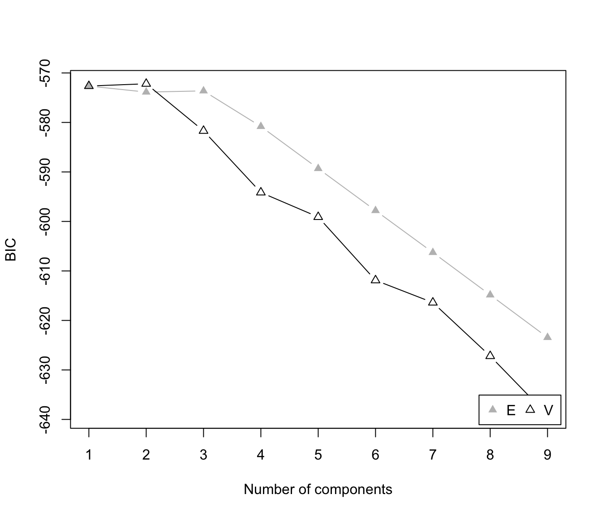
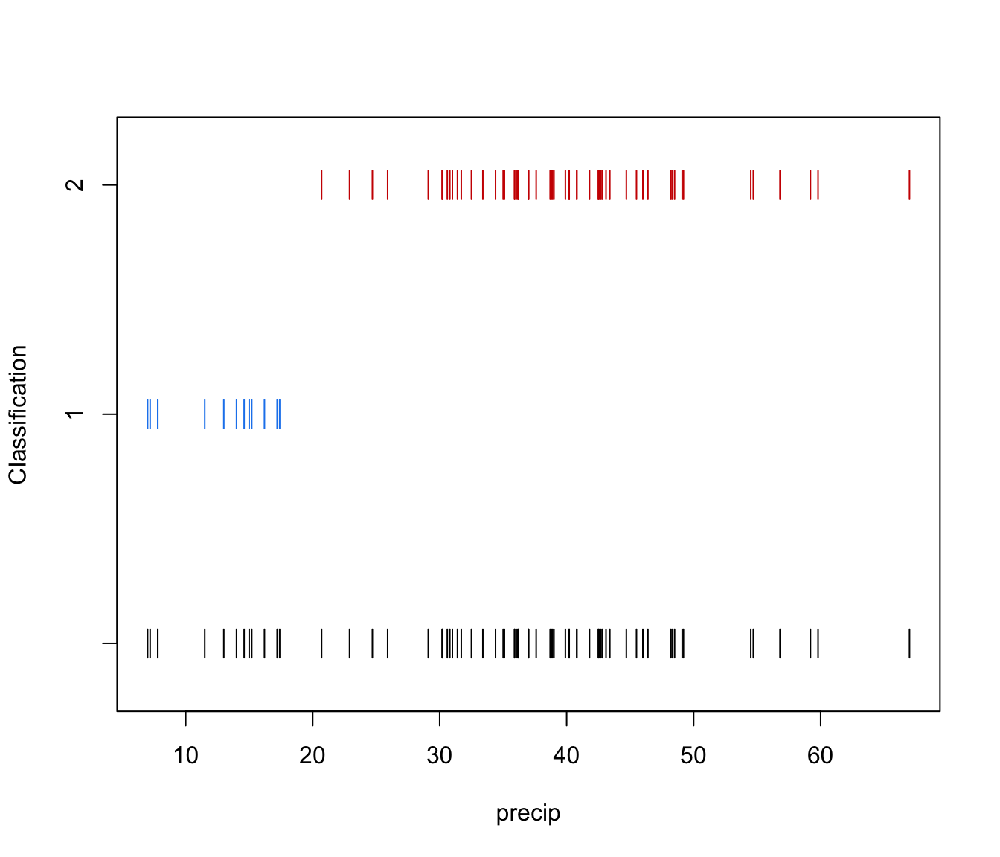
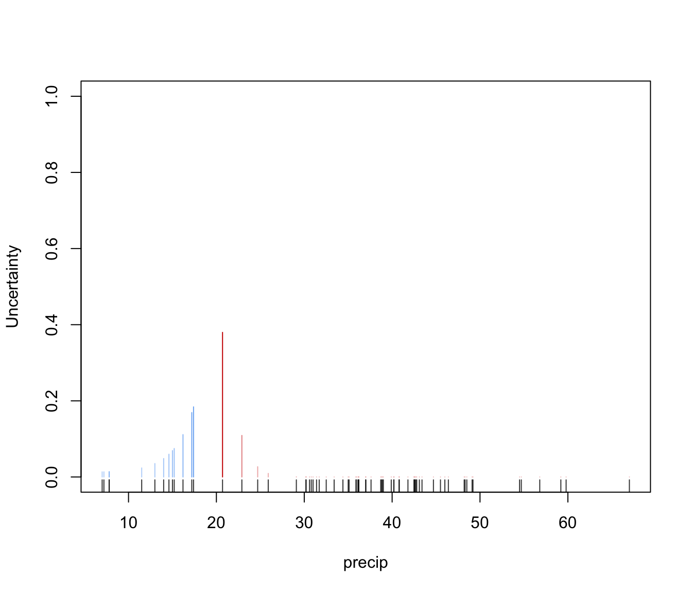
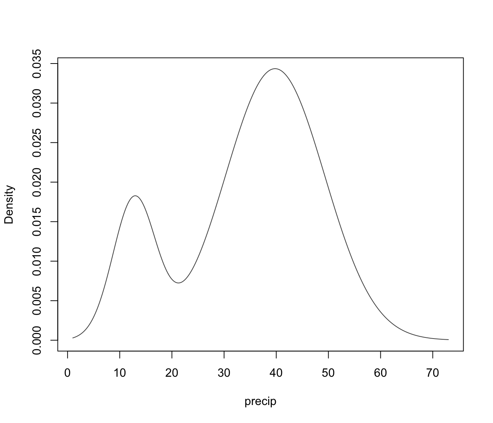
faithfulMclust <- Mclust(faithful)
plot(faithfulMclust)
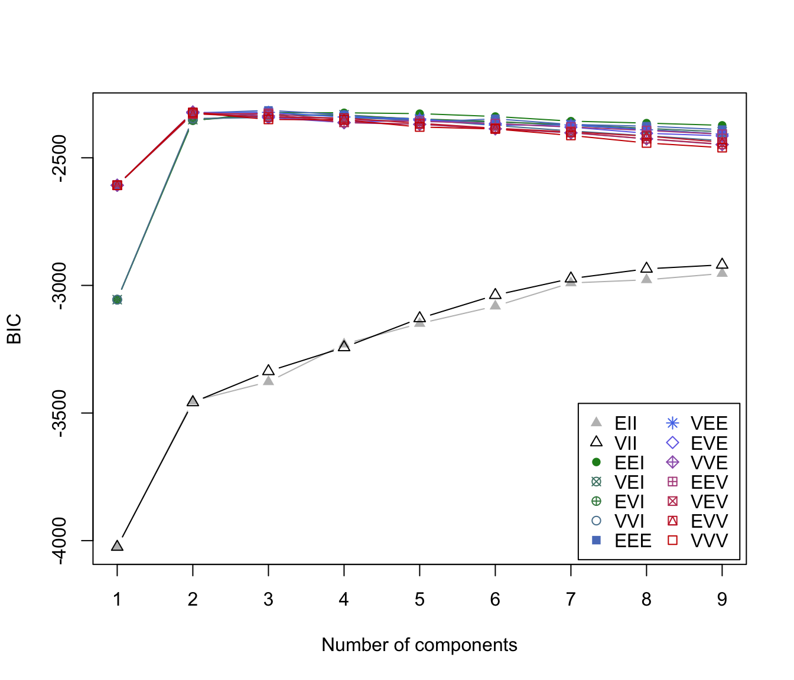
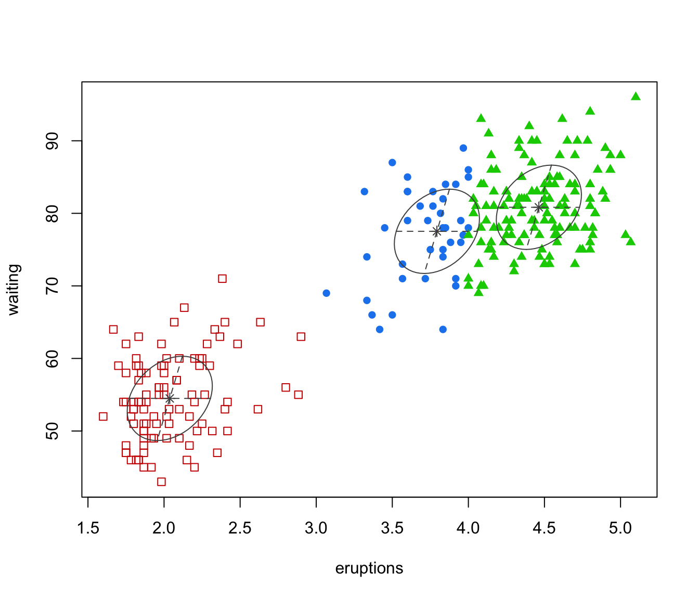
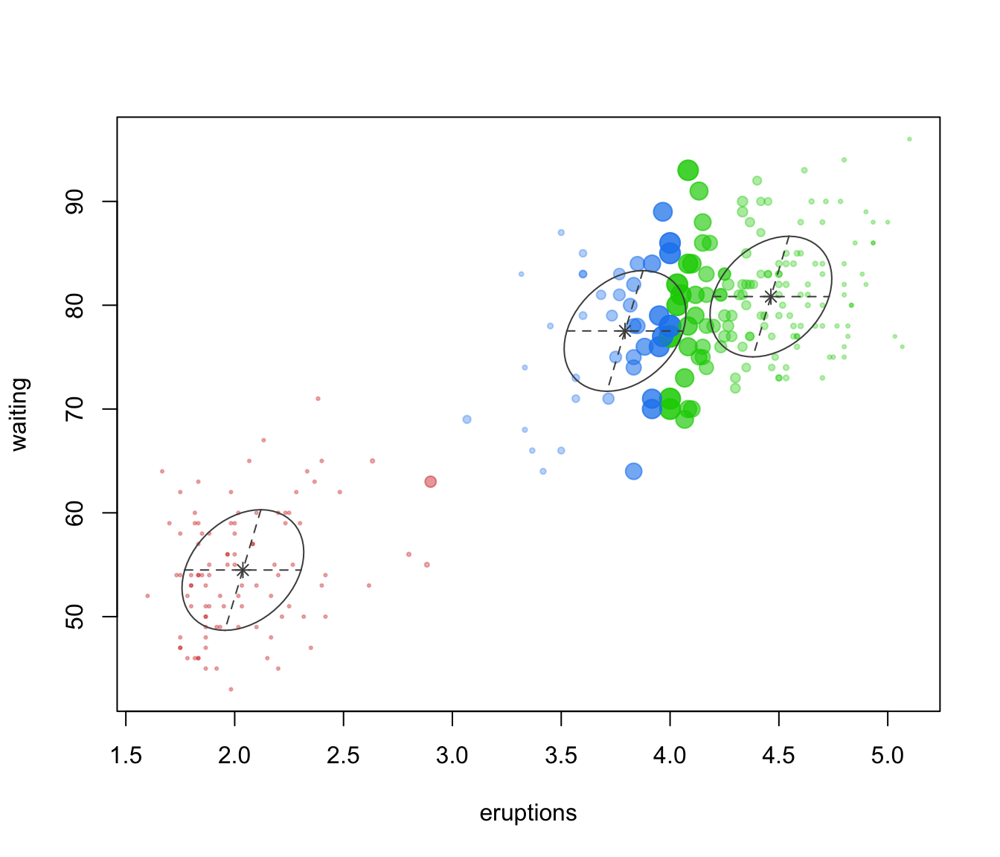
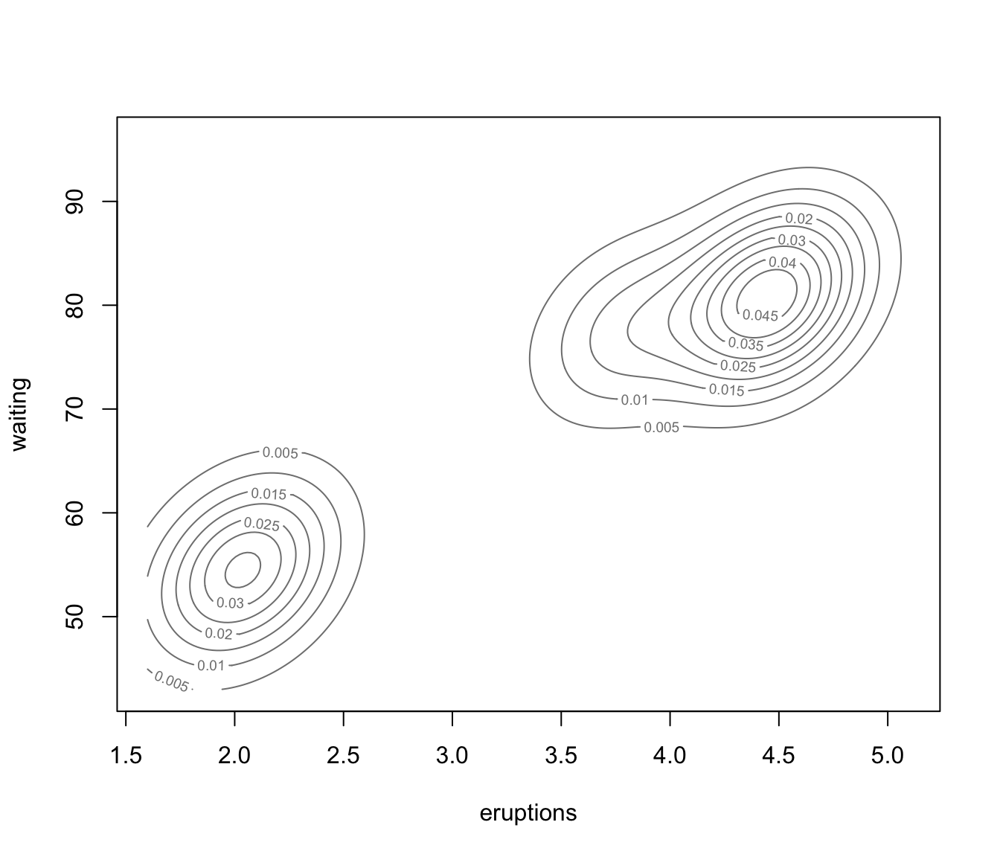
irisMclust <- Mclust(iris[,-5])
plot(irisMclust)

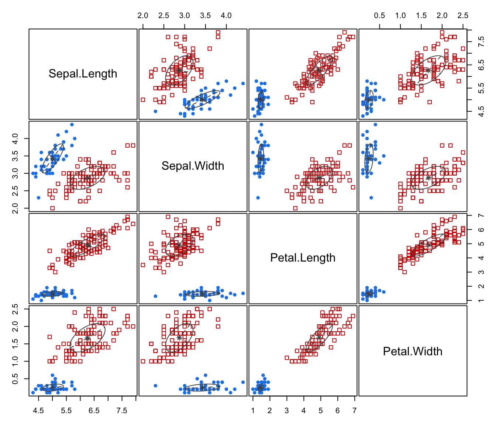
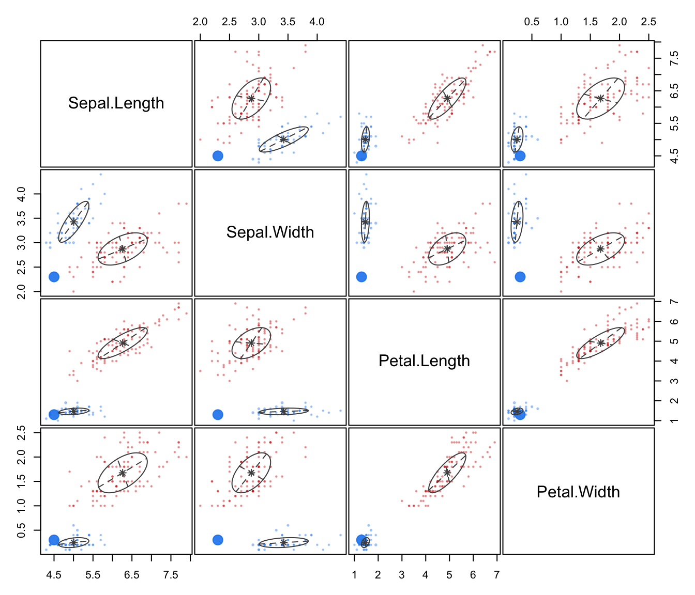
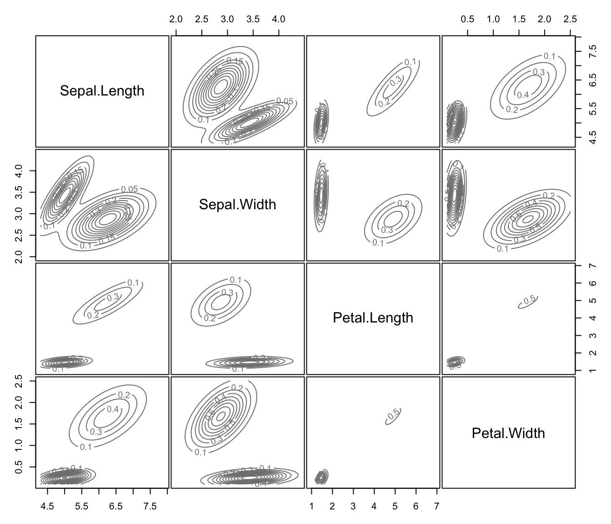
# }